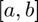
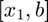
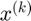
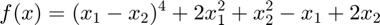

Lecture 6 - Optimization
Optimization methods work to compute the solution to problems of the form of:
By finding  the (a?) value that attains the maximum (assuming it exists).
the (a?) value that attains the maximum (assuming it exists).
We find these problems all over economics:
- Maximizing utility to derive demand.
- Supply side decisions to maximize profits.
- Cost minimization, .
- Maximum likelihood estimation.
- Least squares estimation.
- Generalized Method of Moments.
Contents
Grid Search
If contains a finite number of elemets, we could simply try all of the possible values of and choose the maximum
- Guarenteed to find the maximum.
- But may be very computationally expensive.
For example, Jia (2008, Econometrica) considers how Wal-Mart choses to set up a network of stores in 2065 US Counties (assuming entry is putting at least one store in a county).
- This is a finite set of options: for each county.
- But that is different options.
- Jia uses the structure of the model to eliminate the vast majority of these options, but must do grid search to finish the optimization.
If is not finite, we can approximate it with a finite set and still do a grid search.
- Suppose is , we can do a grid search on
[X1 X2] = ndgrid(0:.2:1, 0:.2:1)
%
X1 =
0 0 0 0 0 0
0.2000 0.2000 0.2000 0.2000 0.2000 0.2000
0.4000 0.4000 0.4000 0.4000 0.4000 0.4000
0.6000 0.6000 0.6000 0.6000 0.6000 0.6000
0.8000 0.8000 0.8000 0.8000 0.8000 0.8000
1.0000 1.0000 1.0000 1.0000 1.0000 1.0000
X2 =
0 0.2000 0.4000 0.6000 0.8000 1.0000
0 0.2000 0.4000 0.6000 0.8000 1.0000
0 0.2000 0.4000 0.6000 0.8000 1.0000
0 0.2000 0.4000 0.6000 0.8000 1.0000
0 0.2000 0.4000 0.6000 0.8000 1.0000
0 0.2000 0.4000 0.6000 0.8000 1.0000
Then we can approximate the maximum of :
Y = - (X1-.45).^2 - (X2-.55).^2 [val, idx] = max(Y(:)) [X1(idx) X2(idx)]
Y =
-0.5050 -0.3250 -0.2250 -0.2050 -0.2650 -0.4050
-0.3650 -0.1850 -0.0850 -0.0650 -0.1250 -0.2650
-0.3050 -0.1250 -0.0250 -0.0050 -0.0650 -0.2050
-0.3250 -0.1450 -0.0450 -0.0250 -0.0850 -0.2250
-0.4250 -0.2450 -0.1450 -0.1250 -0.1850 -0.3250
-0.6050 -0.4250 -0.3250 -0.3050 -0.3650 -0.5050
val =
-0.0050
idx =
21
ans =
0.4000 0.6000
While grid search is primitive, and rarely where we'd want to stop in approximating an optimum. It's often a good place to start to make sure you understand how your function behaves.
And of course, once you do one you may as well plot it (given dimensions):
surf(X1, X2, Y)
This also gives us a chance to ilustrate the curse of dimensionality. While it is usually feasible for 2 or 3 dimensions, constructing a "reasonably dense" grid becomes impractical as the number of dimensions go up (consider Jia, above).
Golden-Search (aka Bracketing) Method
Assume we have a continuous, univariate function . We wish to solve:
Bracketing suggests:
- Picking two points in the interior of  to compute the funciton.
- If , then the bracket is small and return the maximum of .
- If , we know a local maximum must be inside , so set and go to 1.
- If , we know a local maximum must be inside , so set and go to 1.
The only question is how to pick the interior points. They can be uniquely determined by two criteria:
- In successive iterations, be able to "re-use" the previous function evalutation so the algorithm only chooses one new point.
- The length of the new interval is independent of which sub-interval is chosen.
These conditions lead to:
The value for is the ``Golden Ratio'' from Euclid.
Let's use this method to find the maximum of our old friend:
X = -2:.1:4; f = @(x) 2 + exp(x) - 3.*(x.^2); plot(X, f(X), X, zeros(size(X)));
Miranda and Fackler have a simple implementation of golden search, so let's add their library:
addpath('../CEtools/');
Warning: Name is nonexistent or not a directory: /Users/macbook/Documents/GitHub/ECON-512/CEtools
Their function is golden:
File '../CEtools/golden.m' not found.
So we just call:
[xmax, fmax] = golden(f, -2, 4)
Undefined function 'golden' for input arguments of type 'function_handle'. Error in optim (line 115) [xmax, fmax] = golden(f, -2, 4)
- Did we find the find the maximum in ? No. The maximum is
f(4)
- Did the algorithm ``work''? Yes.
- Golden search, like most of the algorithms we consider, will find a local maximum. This is another reason doing some grid searches is often advisable.
Nelder-Mead (aka Simplex or Polytope) Method
So how to search for a maximum in a multi-dimensionsal space? The most common derivative free method is the Nelder-Mead alogorithm. Its intuition is straightforward. Define a simplex of points () for an dimensional space. Take the lowest (worst) point and reflect it across the hyperplane of the remaining points. The hope is the new point will be better than the second lowest point and your simplex will "climb" the hill.
The algorithm is more illustrative. This one is adapted from Judd:
For an dimensional funciton, initialize as the starting simplex.
- Sort the verticies such that
 .
. - Find the lowest such that reflecting across the remaining points produces a point such that . Set , go to 1. If no such point exists, continue to 3.
- If the area of the current simplex is less than , Return . Otherwise, go to 4.
- Shrink the simlex towards the best point, set , go to step 1.
To calculate a reflection:
This algorithm will converge to a local min (for small enough tolerance), but can be very slow. It is often useful to include expansion steps so your simplex doesn't shrink pre-maturely.
MATLAB's native implementation of Nealder-Mead is fminsearch, the full algorithm for this implementaiton is described here.
Note that MATLAB's fminsearch minimizes , this is the typical convention from engineering.
options = optimset('PlotFcns',@optimplotfval, 'Display','iter'); fun = @(x)100*(x(2) - x(1)^2)^2 + (1 - x(1))^2; x0 = [-1.2,1]; x = fminsearch(fun,x0,options)
FYI, There is also an implementation of Nelder-Mead in CETools, neldmead.m. I don't know of anyone who has used it on research code.
When to use Nelder-Mead:
- Derivative information is hard to compute.
- Funciton is very rough, so local derivative information is noisy.
- You have some discontinuities.
The original Berry, Levinsohn, and Pakes (1995) code (which we'll look at in a couple weeks) used the Nelder-Mead algorithm, although it may not be the best choice for this sort of problem today.
Newton - Raphson Algorithm
Newton's method for solving a root finding problem was successive linearization. Newton's method for optimization is to use successive quadratic approximations.
Given  use a second-order Taylor approximation of around :
The approximate problem has first order condtions:
Which leads to an iteration rule,
Note that this is the same iteration rule we would use if we applied Newton's method as a rootfinder of the first order conditions. All of the caveats we mentioned during rootfinding still apply:
- Guarenteed to converge if initial is ``sufficiently close'' but no test for how close this must be.
- Additional complexity to compute gradient and Hessian. Hessian now is to store and to compute.
- Inversion step should really be accomplisted by solving a linear equation.
- No guarentee that Hessian is postitive (max) or negative (min) definite, if it is not, a newton iteration could take a step "backward".
- If it converges, we only know the converged point is a local minimum. (In fact, we'll use solving the first order conditions as the stopping rule.)
Let's do a quick example where we want to minimize,

The Gradient is, (swtiching to Judd's notation so you see both).
The Hessian is,
So the Newton-Raphson Iteration rule is:
Implemented in MATLAB, this looks like:
n=0; %initialize iteration counter focerr=1; %initialize error x=[1;1]; %set starting value %Computation loop while focerr>1e-10&n<100 %Compute Gradient gradf=[4*(x(1)-x(2))^3+4*x(1)-1;... -4*(x(1)-x(2))^3+2*x(2)+2]; %Compute Hessian Hf= [12*(x(1)-x(2))^2+4, -12*(x(1)-x(2))^2;... -12*(x(1)-x(2))^2, 12*(x(1)-x(2))^2+2]; %Perform Iteration y=x-Hf\gradf; x=y; n=n+1; %Calculate FOC Error focerr= norm(gradf); end n,x,focerr, %display end values
Notice this really is just rootfinding for the FOCs we never even compute the objective function during the iterations.
f = @(x) (x(1) - x(2))^4 + 2*x(1)^2 + x(2)^2 - x(1) + 2*x(2); f(x)
We didn't even explicitly say whether we were minimizing or maximizing, just looking for a local critical point.
While it is the theoretical foundation for many derivative based optimization algorithms, Newton-Raphson itself is rarely implemented in practice.
- Computing the Hessian is costly, and approximations often work well.
- Flexibility in the magnitude of the step is often beneficial.
- Steepest descent methods make sure we are progressing towards a max or min, not just to a critical point.
We'll cover these methods next week.